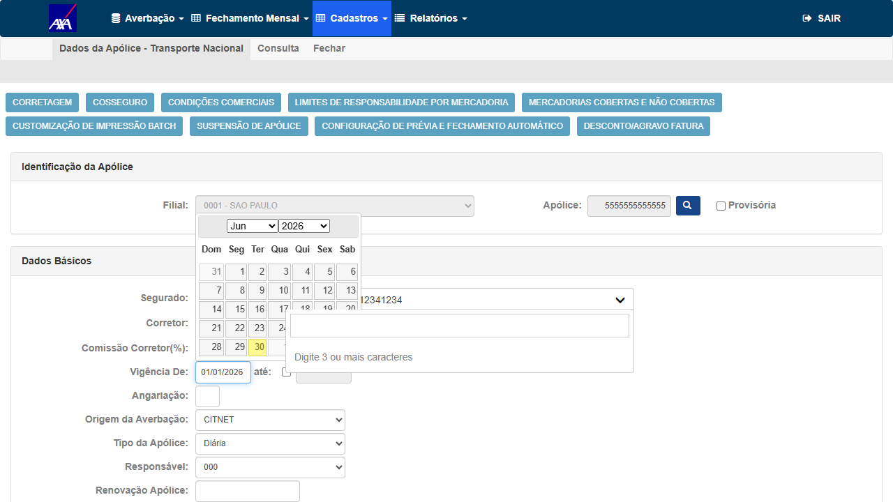
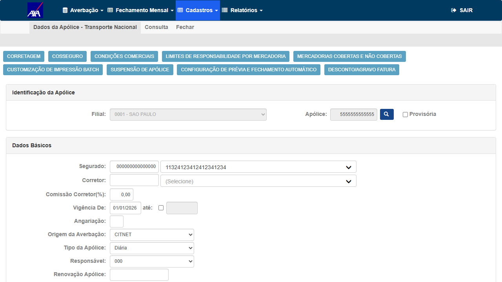
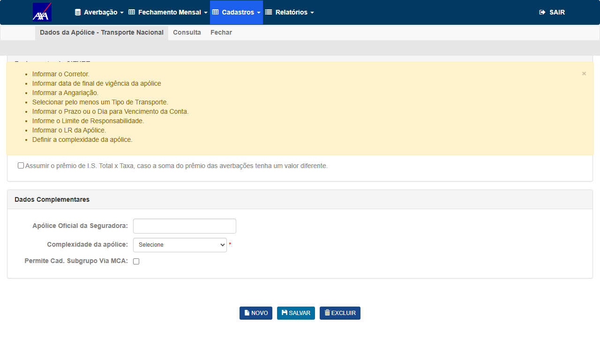
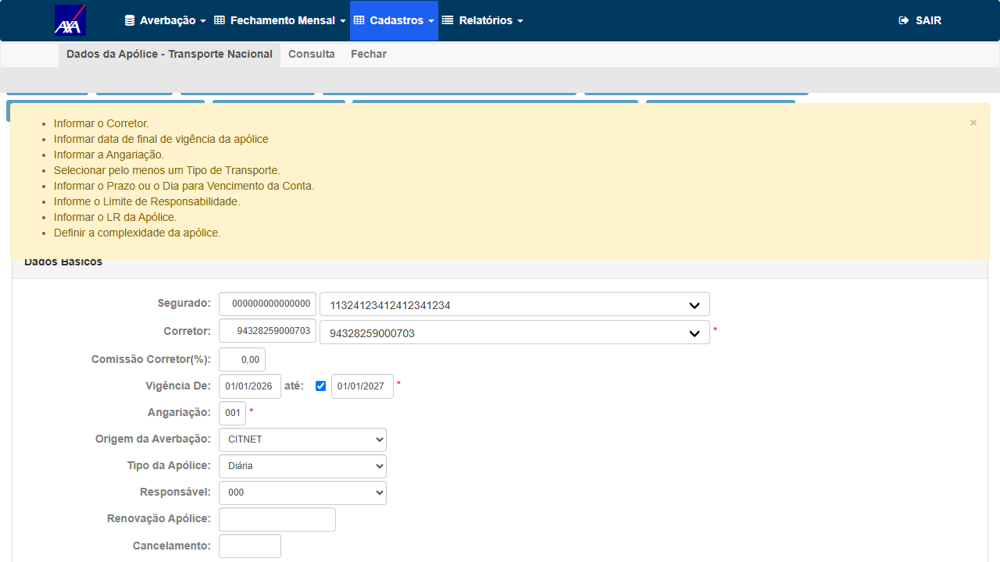
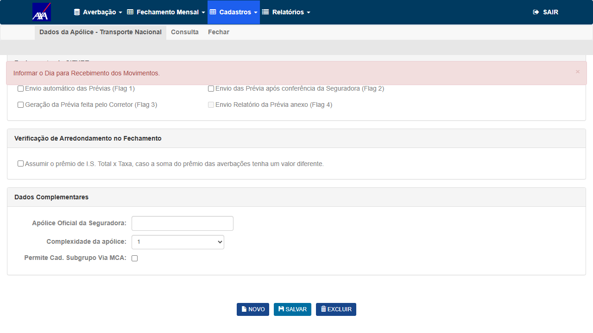
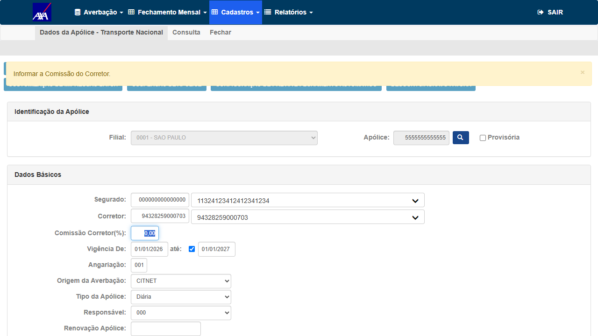
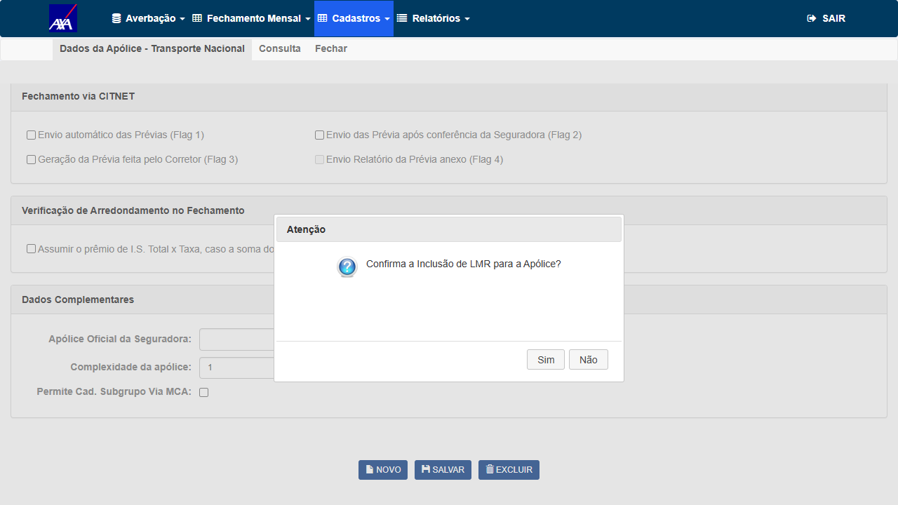
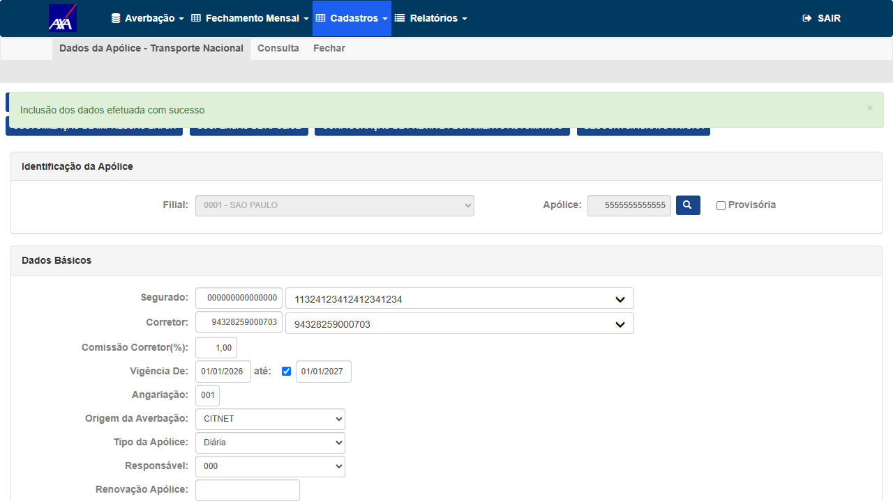
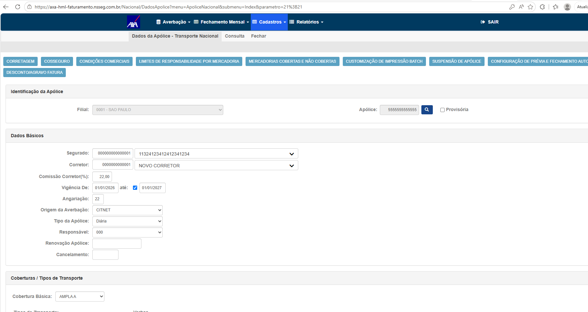
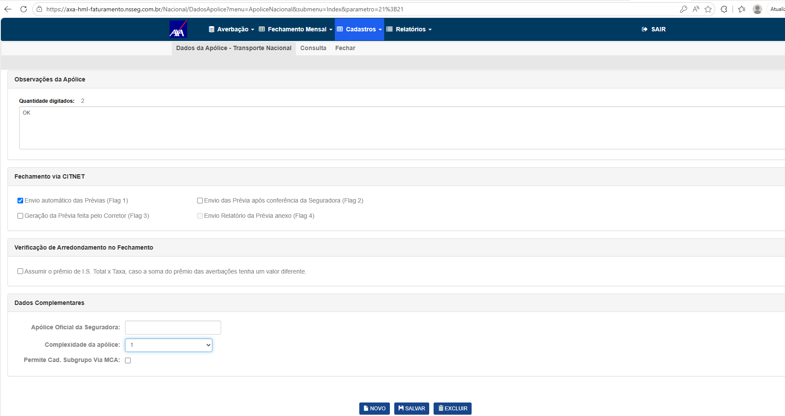

Casos de Teste
Grupo 1 — Verificação do Bug (SALVAR)
Verificar se o botão SALVAR executa ação ao gravar uma nova apólice de Transporte Nacional ramo 21 no CITWEB AXA HML com todos os campos obrigatórios preenchidos.
- Logado como FRED/DERF no CITWEB AXA HML
- Módulo Nacional aberto (nova aba)
- Segurado 000000000000000 + Corretor 94328259000703 disponíveis no ambiente
- Acessar
https://axa-hml-faturamento.nsseg.com.br/Login/e fazer login comFRED / DERF - No menu do CITWEB, clicar em Nacional (abre nova aba)
- Na aba Nacional, navegar: Cadastros → Apólice → Transporte Nacional
- Informar apólice
5555555555555, Filial0001 - SAO PAULOe clicar na lupa - Preencher todos os campos obrigatórios:
- Corretor:
94328259000703(via autocomplete Select2) - Comissão Corretor:
1,00% - Vigência Até:
01/01/2027 - Angariação:
001 - Tipo de Transporte: Terrestre (checkbox)
- Prazo de Vencto:
30 - Complexidade:
1 - LMR:
1.000.000,00| LR:1.000.000,00 - Dia Recebimento Movto:
05 - Dia para Emissão:
10
- Corretor:
- Clicar em SALVAR e responder aos prompts server-side até conclusão
- Confirmar modal "Confirma a Inclusão de LMR para a Apólice?" com Sim
SALVAR dispara validações e grava a apólice, exibindo mensagem de confirmação de sucesso.
BUG NÃO REPRODUZIDO no build V 1.0.260625.1111. O botão SALVAR é totalmente funcional.
Sequência registrada:
① Validação client-side (group
② Server round 1 → "Informar o Dia para Recebimento dos Movimentos" (preenchido: 05)
③ Server round 2 → "Informar o Dia para Emissão da Conta Mensal" (preenchido: 10)
④ Server round 3 → "Informar a Comissão do Corretor" (preenchido: 1,00%)
⑤ Modal → "Confirma a Inclusão de LMR para a Apólice?" → respondido Sim
⑥ Toast de sucesso → "Inclusão dos dados efetuada com sucesso"
Hipótese: a percepção de "sem ação" nas capturas iniciais ocorreu porque campos obrigatórios estavam vazios e os tooltips de erro jQuery UI estavam invisíveis (ícone
Sequência registrada:
① Validação client-side (group
vDadosApolice) disparada e resolvida para todos os campos② Server round 1 → "Informar o Dia para Recebimento dos Movimentos" (preenchido: 05)
③ Server round 2 → "Informar o Dia para Emissão da Conta Mensal" (preenchido: 10)
④ Server round 3 → "Informar a Comissão do Corretor" (preenchido: 1,00%)
⑤ Modal → "Confirma a Inclusão de LMR para a Apólice?" → respondido Sim
⑥ Toast de sucesso → "Inclusão dos dados efetuada com sucesso"
Hipótese: a percepção de "sem ação" nas capturas iniciais ocorreu porque campos obrigatórios estavam vazios e os tooltips de erro jQuery UI estavam invisíveis (ícone
ui-icons_444444_256x240.png com 404 no console), mascarando a validação client-side.
Evidências — Teste com formulário incompleto (1ª execução — comportamento inicial observado)

EV1 — Formulário com campos incompletos (1ª execução): validação disparada mas tooltips invisíveis (jQuery UI 404)

EV2 — Aparência de "sem ação": validação client-side disparou mas erros não renderizados visualmente

EV3 — Reteste: lista de erros client-side visível após segundo clique — prova que validação existe

EV4 — Erros de validação client-side listados: Corretor, Vigência, Angariação, Terrestre, Prazo, LMR, LR, Complexidade
Evidências — Teste com formulário completo (resultado definitivo: BUG NÃO REPRODUZIDO)

EV5 — Formulário com todos os campos obrigatórios preenchidos (Corretor, Comissão, Vigência, Angariação, Terrestre, LMR, LR, Complexidade)

EV6 — Após SALVAR: server retorna "Informar o Dia para Recebimento dos Movimentos" — postback confirmado

EV7 — Server round 3: "Informar a Comissão do Corretor" — cada clique em SALVAR processa um postback completo

EV8 — Modal de confirmação: "Confirma a Inclusão de LMR para a Apólice?" — SALVAR chegou à lógica de negócio do servidor

EV9 — Toast de sucesso: "Inclusão dos dados efetuada com sucesso" — apólice 5555555555555 gravada. Botão Excluir habilitado.
Evidências de Referência (card AzDO — reportadas pelo criador)

REF-1 — Formulário preenchido com dados válidos (captura original do card AzDO)

REF-2 — Seção Dados Complementares + botões NOVO/SALVAR/EXCLUIR (captura original do card AzDO)
Grupo 2 — Cenário Esperado (Pós-Fix)
Grupo 3 — Regressão